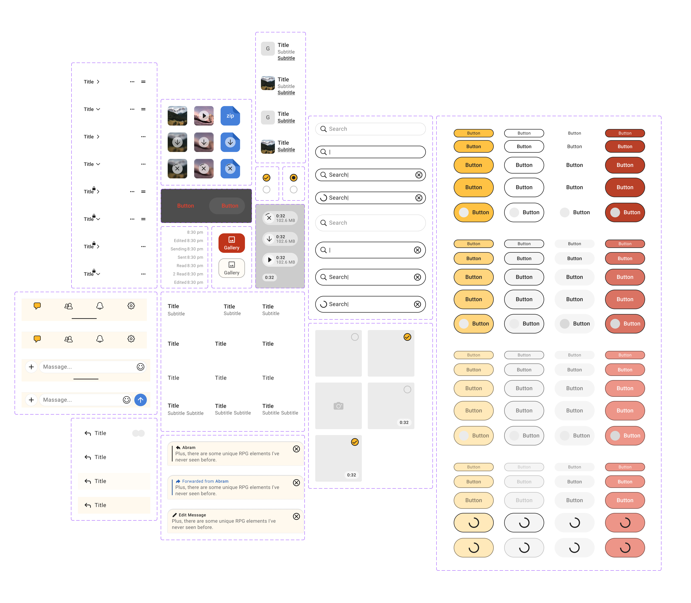

Pyroblast: chats, channels
and streams for gamers
No servers to set up, no noise to fight through. I designed it end-to-end, solo: the design system, the core messaging experience, and every flow below. Each one is a live prototype. Tap through.
Designed for desktop, iOS and Android; the prototypes below are the mobile flows. Built at an early-stage startup that ran out of funding before launch. The product never shipped, but the thinking did.
Design System

Problem
A messenger for gamers has a huge surface: chats, channels, streams, profiles, settings — across desktop, iOS and Android. As the only designer, I couldn’t afford to draw each screen from scratch: every platform needed its own systematic set of parts, or the product would outgrow me in weeks.
Solution
I built a design system for each platform in Figma — desktop, iOS and Android. The one you can open on this page is the mobile library, rebuilt live in code.
It starts with the foundations: a color palette built on alpha scales, a matching type ramp, elevation and an icon set — every value named, so screens reference tokens instead of raw hex codes. On top sits the component library — from buttons and toggles up to complete chat blocks — each documented with its variants, states, tokens and accessibility requirements. Where the design didn’t define a state yet, that gap is flagged explicitly instead of being papered over.
Outcome
- Every prototype on this page is assembled from this library — same tokens, same components, nothing drawn twice
- Designing a new screen turned into assembling documented parts instead of drawing from zero
- Components read as a spec, not a mood board: states, tokens and accessibility are written down, including what’s still missing
Chat Organization
Problem
Gaming communities can grow from a small group into dozens of conversations within weeks. Without a clear structure, chats become noisy and difficult to navigate, causing members to mute channels or disengage.
The challenge was supporting both sides of growth: helping new communities start from zero and helping established ones stay organized as they scale.
Solution
I designed two complementary experiences.
The first guides a founder from an empty space to the first conversation and creation of the first sub-channel, making the initial setup feel simple and actionable.
The second helps mature communities manage complexity through folders, search, drag-and-drop organization, and renaming — adding structure without changing existing chat habits.
Outcome
- Enabled communities to evolve from a single chat into organized spaces
- Reduced friction when creating and managing multiple conversations
- Added structure for large communities while keeping the familiar chat experience intact
Rich Photo Layouts
Problem
In most chat apps, photos are simply attached to a message. Images and text are treated as separate blocks, making it difficult to create structured posts, guides, or announcements where visuals and text work together.
Solution
I designed a flexible photo composer that lets users choose how an image is displayed within a message. Photos can be inserted in different layouts, while text flows naturally around them instead of being limited to a caption below.
This gives users editorial control over message composition, making it possible to create rich, well-structured content directly inside the chat.
Outcome
- Turned photo attachments into a content creation tool rather than a simple file upload
- Enabled users to create visually structured posts without leaving the conversation
- Expanded the messaging experience beyond plain text and attachments
Log in/Sign up
Problem
Traditional sign up flows ask users to create an account before they experience any value. In messaging apps, that friction often leads to abandonment before users understand why they should register.
Solution
I redesigned onboarding to reduce the barrier to entry. Instead of opening with a sign up form, the app lets visitors explore the product first: they can browse public chats, search conversations, and experience the interface without creating an account.
Actions that require identity — such as sending messages — remain locked until registration. When users decide to join, sign up and log in are combined into a single flow, passwords are replaced with a one-time verification code, and profile setup is postponed until after the account is created.
Outcome
- Reduced friction at the first touchpoint by delaying registration until users had experienced the product
- Allowed visitors to explore public content without an account while protecting interactive features
- Simplified authentication by replacing passwords with one-time verification codes and deferring profile setup